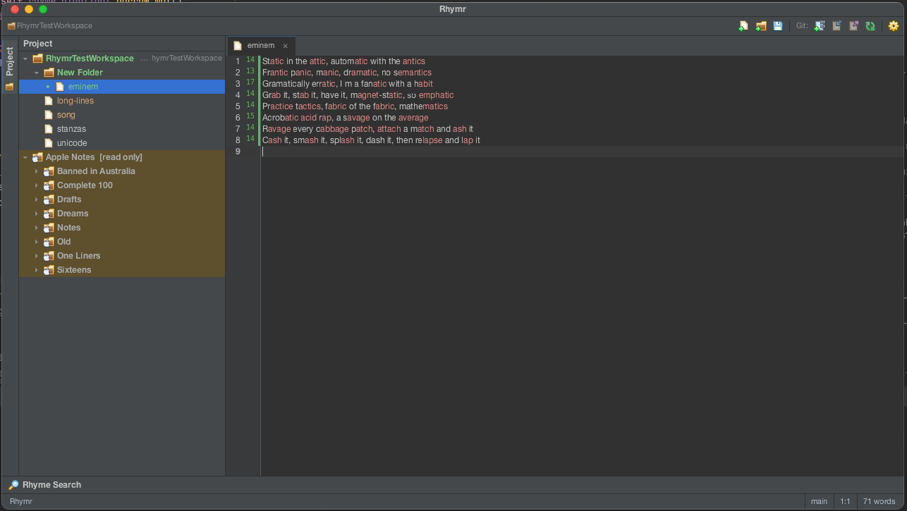

A rhyme-scheme IDE for lyricists
The lyric editor that colours your rhymes.
A fast, distraction-free workspace for poets, lyricists and MCs. Syllable counts, rhyme colouring, a rhyme finder and version history — in one window that feels like a professional editor.
MIT-licensed · no account · works fully offline

Rhyme groups coloured by ear, syllable counts in the gutter, changed-line marks against git HEAD, and Apple Notes mounted read-only as an external library — all in one window.
What's in the window
Writer's tooling where the developer tooling would be.
The polish and keyboard-driven layout of a JetBrains IDE — toolbar, tool windows, project tree, built-in VCS — with rhyme and metre in place of the debugger.
Rhyme highlighting
Words that rhyme are colour-grouped as you type — 24 distinct hues, laid out like a rhyme-scheme breakdown, including partial and multi-syllable rhymes. Scoring is syllable-level local alignment (Hirjee & Brown).
Syllable gutter
A live syllable count in the margin next to every line, from bundled CMUdict phonemes with a phoneme→letter alignment. Guarded by a ~19,000-word regression suite.
Rhyme finder
Look up rhymes, near-rhymes and same-sounding words for any word, grouped by syllable count. Datamuse online, CMUdict and local scoring when you're offline — layered, never a single lookup.
Stanza lock
The line that starts the section you're in stays pinned to the top of the editor while you scroll a long piece, so you never lose the hook.
Projects & files
Open a folder and browse, create, rename, move and delete files in a side tree. On macOS, your Apple Notes mount read-only as an external library for reference and search.
Version history, built in
Lines you've changed since your last commit are marked in the gutter. Commit, push, pull and fetch without leaving the app; the current branch shows in the status bar.
Writing stats
Word count and cursor position always in view in the status bar — no counting, no guessing where you are in a sixteen.
Light & dark themes
Classic Darcula and a classic IntelliJ Light, with colour or plain icons. Change the font, theme or an option and it lands on your open documents right away.
$5, or build it yourself
A bought build and a cargo build are the same program.
The source is MIT and free to compile. Selling the binary is how the work gets funded — not how it gets locked down.
$5+ pay what you want
Buy the macOS build
The price of one coffee — own it forever, every update included. $5 is the floor; pay more to back the work if you want to.
- Notarised, ready-to-run — Apple silicon & Intel
- Every update, forever — no renewal
- No licence key, no sign-in, no activation
- Windows build in progress — buyers get it when it lands
$0 from source
Or git clone it
Everything the paid build does, compiled on your machine. Same code, same features.
git clone https://github.com/Rhymr/win-mac.gitcargo run --release- Rust + GTK4 — see
Cargo.tomlfor prerequisites
Rhymr is piracy-tolerant by design. No DRM, no serial keys, no trial timer, no nag screens, no check for how a copy was obtained, no telemetry, no phone-home. The core — editing, the syllable gutter, rhyme highlighting, pronunciation, version control — works with zero network access, forever. Reward the people who pay by making the tool excellent, never by punishing the people who don't.
The short version
Specs.
- Built with
- Rust · GTK4 (gtk4-rs) + libadwaita · SCSS compiled at launch
- Platforms
- macOS — Apple silicon & Intel, fully supported · Windows — in progress
- Offline
- 100% — no account, no sign-in, no licence server, no telemetry
- Pronunciation
- CMUdict bundled · Datamuse optional, with local fallback
- Licence
- MIT — source free to build and redistribute
- Version
- 2026.1 (calendar) · beta